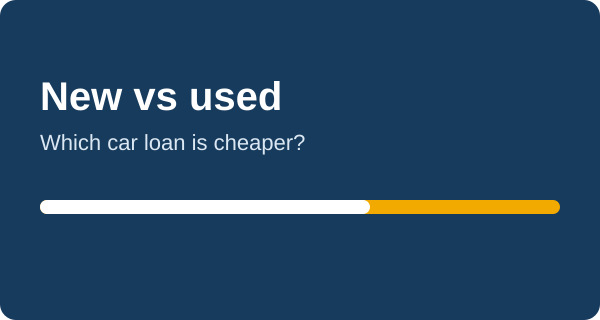

New vs Used Car Loan: Rates, Payments and Which Is Cheaper

New cars often come with lower advertised rates. Used cars cost less to buy. Which loan is cheaper depends on the whole picture, not only the rate.
Interest rates
Lenders usually charge less for new cars because the car is worth more as security. Used-car loans often carry a higher APR, and the gap can be a few percentage points. Rates change often, so compare live offers from a bank, a credit union and the dealer.
Depreciation
A new car typically loses a large share of its value in the first years. A used car has already taken much of that hit. A lower price means you borrow less, so even at a higher rate the interest in dollars can be smaller.
What to compare
- Total cost: price, tax, fees and interest together.
- Insurance: newer cars often cost more to insure.
- Repairs: a new car has a warranty. A used car may need repairs sooner.
Quick example
A $35,000 new car at 5.5% for 60 months costs about $669 a month. A $24,000 used car at 8% for 60 months costs about $487 a month. The used car has the higher rate, yet the lower payment and the lower total cost.
Enter both cars into the calculator and compare the total interest and total cost lines.
Next: How Car Loan Payments Are Calculated (Formula and Example)